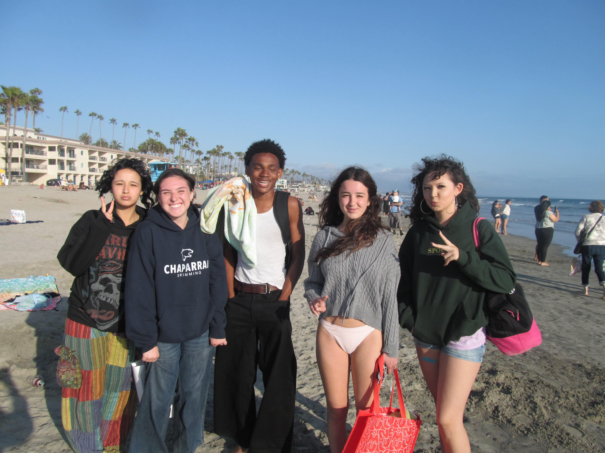

At the Beach with Gen

Now this is something that if you had told me back in freshman year, I would NOT have believed. Let me give some context. Basically freshman year me and this girl, not even CLOSE to the same ground, started hanging out. Eventually, she invited me to her quince, and during that let me tell you I have NEVER bonded with such a group since. I mean my trio is the only people who come close. Mind you, we fucked up the dance at the end anyways after MONTHS of prep. It was fun though.
That girl that I met? that was Genesis. She's the girl with the chap hoodie in the photo. By far one of the funniest, vibrant, and realest people I have ever met. The black dude in the back is Pierce. We go to the same school, are nearly the same age, but our grades are very far apart. He keeps it real and he's funny sometimes so we keep him around (this is a joke I love Pierce just as much.) We go to the beach often with her friends and its always a good time. Especially since we eat food nearly EVERY time we go.